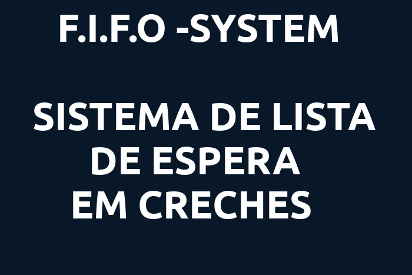
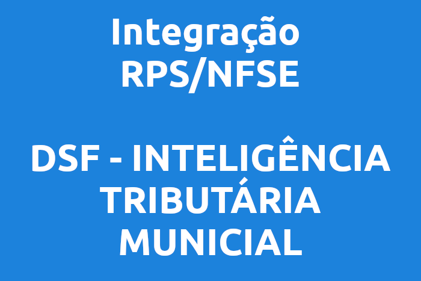

Desenvolvedor de software · Brasil
Desenvolvo soluções web para gestão pública, integração de sistemas e automação de processos.
Sistemas que ajudam equipes e serviços públicos a trabalhar melhor.

